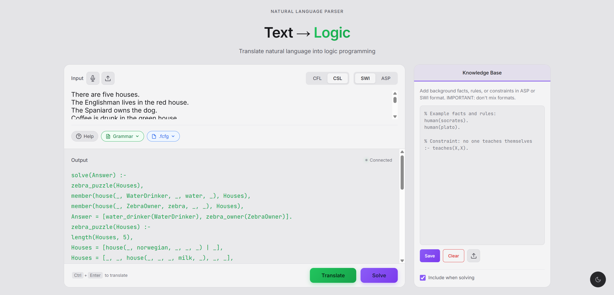
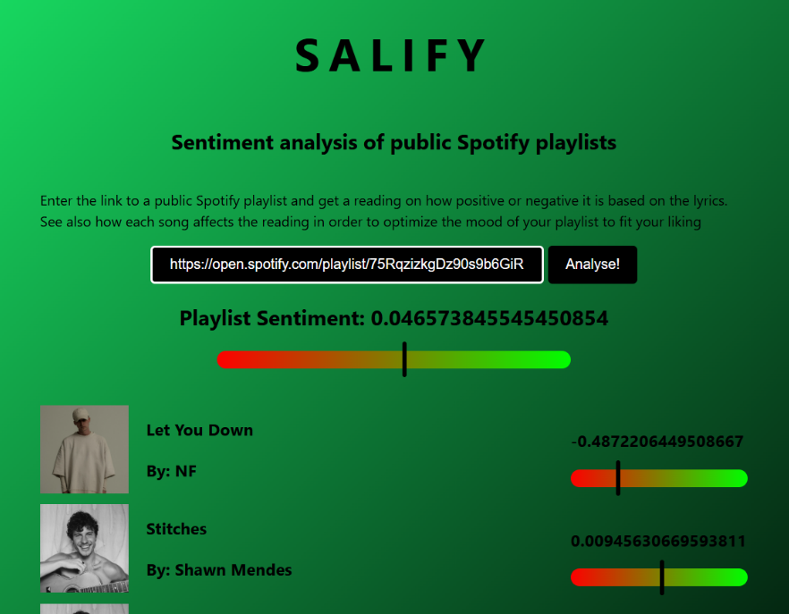
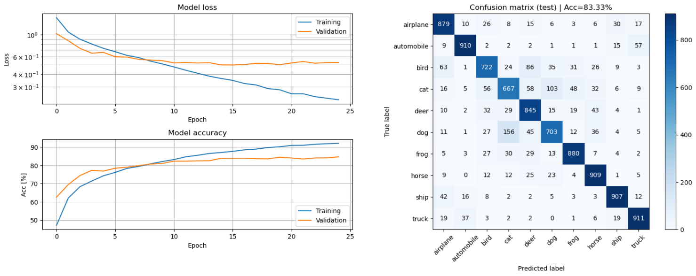
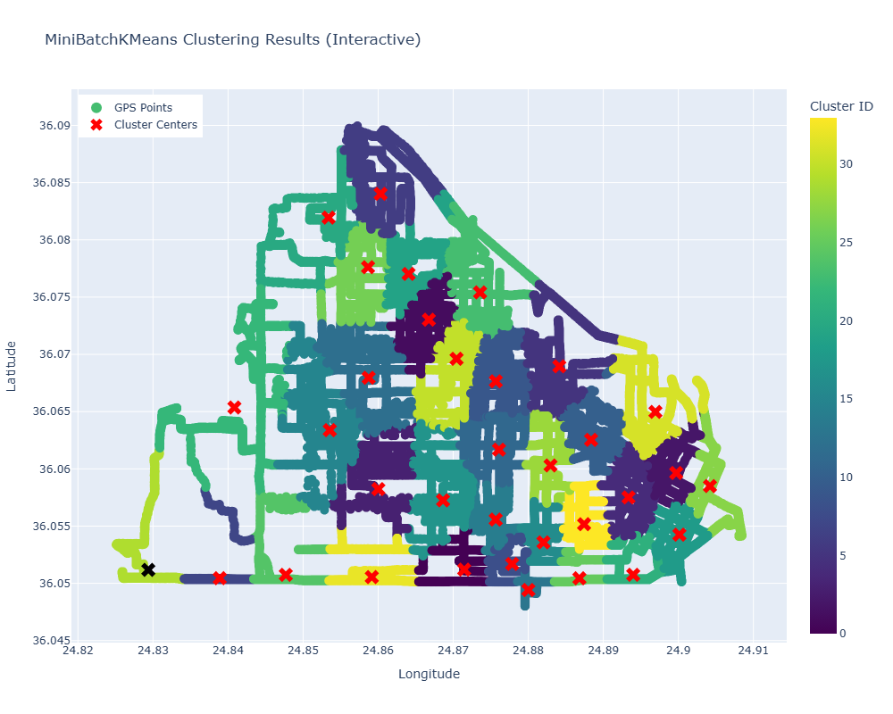

MSc Engineering · Linköping University
Nikita Sidarovich
AI & Machine Learning · Data Visualization
Engineering student building neuro-symbolic and data-driven systems — currently finishing a master's thesis on translating natural language into verifiable formal logic.
About Me
My background, focus areas, and what drives my work in technology.
- LocationNorrköping, Sweden
- FocusAI/ML · Data Visualization
- LanguagesSwedish · English · Russian
I'm a Master of Science in Engineering student at Linköping University, specializing in Artificial Intelligence, Machine Learning and Data Visualization. My academic work has given me a strong foundation across these fields, from neural networks to scientific and information visualization.
I enjoy problem-solving and building systems end to end — from data processing pipelines to full-stack prototypes. My current focus is neuro-symbolic AI: combining large language models with formal logic solvers to produce answers that are not just fluent, but provable and traceable.
Outside of coding I stay active through training, playing video games, and spending time with friends and family.
Education
My academic journey and the courses that shaped my expertise.
Media Technology and Engineering
Linköping University, Sweden
Specialized in Data Visualization, Data Processing, Cybersecurity, Artificial Intelligence and Machine Learning.
Key Specialization Courses
AI & Machine Learning
Data Visualization
Cybersecurity
Erasmus+ Exchange Italy
Università di Genova, Genoa, Italy
Research stay at the University of Genoa during my master's thesis on neuro-symbolic translation — using LLMs to translate natural language into formal logic programs executed by a sound solver (Clingo / SWI-Prolog) for verifiable, traceable reasoning.
Technical Specialization (Information & Media Technology)
Stockholm Science & Innovation School
Skills & Expertise
The languages, frameworks, and tools I work with most.
Programming
AI / Machine Learning
Data
Web & Backend
Tools
Languages
Featured Projects
A selection of academic and personal work.

Natural Language Parser Master's Thesis
Evaluation of neuro-symbolic translation models used to formalize natural language. Researches how context-free grammar — alone or combined with large language models — can translate language into formal logic, with reasoning delegated to a sound solver. Conducted in part during an Erasmus+ exchange at Università di Genova.

SALIFY
A sentiment analysis tool that analyzes public Spotify playlists, powered by BERT, the Spotify API and the Genius API.

TBMI26
Neural Networks and Learning Systems coursework from Linköping University, covering supervised, deep, reinforcement and ensemble learning.

TNM098
Coursework for Advanced Visual Data Analysis at Linköping University — processing and visualizing textual, geospatial and temporal data.
Get In Touch
Let's Work Together
I'm always interested in new opportunities and projects. Whether you have a question, want to collaborate, or just want to say hello — the best way to reach me is a message on LinkedIn.